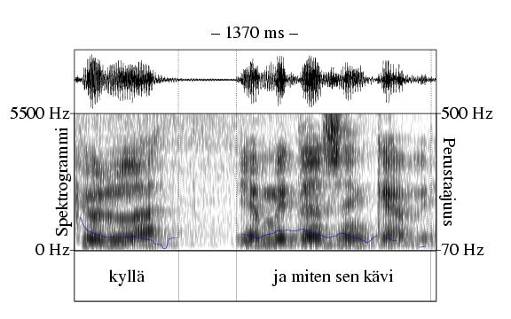
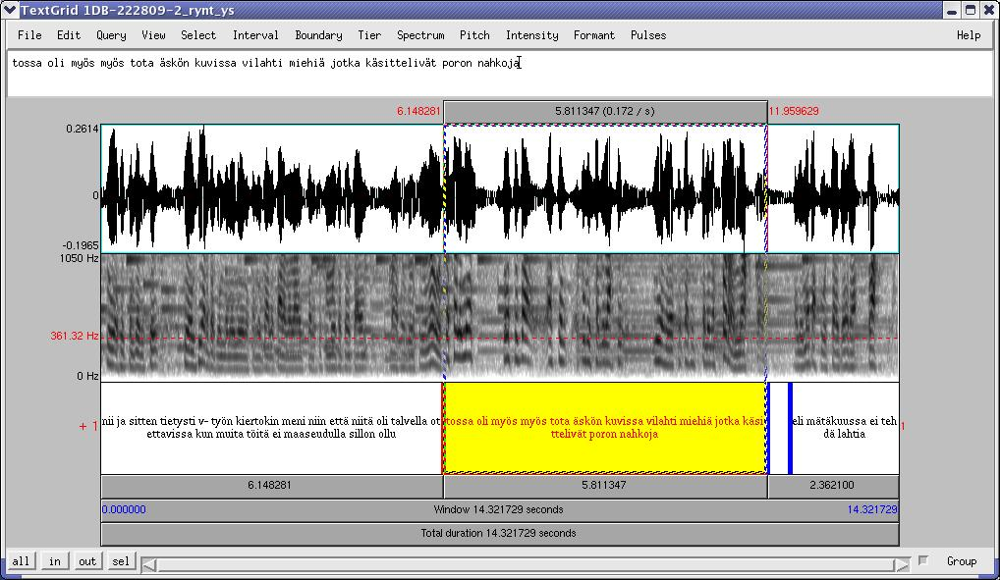

Vuoron rakenneyksikkö, joka muodostaa syntaktisen, pragmaattisen ja/tai prosodisen kokonaisuuden (ks. esim. kuva 6.5). Lausumaa ei voi tyhjentävästi rakenteellisin kriteerein määritellä. Yksi lausuma voi koostua pelkästä dialogipartikkelista, mutta toisaalta se voi olla usean lauseen mittainen. 6.2
|

(http://www.csc.fi/kielipankki/puhe/recordings/1DB-220197/). |
Vuorot kannattaa nimikoida ennen lausumia. Vuoro voi sisältää yhden tai useamman lausuman eli vuoron rakenneyksikön. Ison suomen kieliopin mukaan "jokainen syntaktisen kokonaisuuden loppu on periaatteessa mahdollinen puhujanvaihdoskohta" (15, s. 960). Näin ollen jokainen syntaktisen kokonaisuuden loppu on myös todennäköinen lausuman raja.
Usein lausuma on myös prosodinen kokonaisuus. Moniyksikköisissä vuoroissa puhuja saattaa kuitenkin jättää lausumarajan prosodisesti merkitsemättä voidakseen pitää vuoroa pidempään. Hän voi esim. rynnätä vaihdoskohdan yli (14, s. 38), mistä on esimerkki kuvassa 6.6. Moniyksikköiset vuorot ovat tavallisia etenkin kertomuksissa ja selostuksissa (15, s. 962). Narinaääni (ks. 9) voi - etenkin suomenkielisessä puheessa - olla merkkinä mahdollisesta puhujanvaihdoskohdasta ja näin ollen myös lausuman rajasta (ks. esim. 19, 20).
|

(http://www.csc.fi/kielipankki/puhe/recordings/1DB-222809-2/). |
Lausuman rajat tulee kohdistaa vuorojen (6) rajojen kanssa sekä sana-, tavu- ja äännerajojen kanssa, mikäli nämä on jo annotoitu.
Ortografinen litteraatti. Lausumalla on myös piirre finalIntonation, jolla voidaan haluttaessa kuvata lausuman lopussa havaittu sävelkulku. Vaihtoehtoja on kolme: intonaatio joko laskee (falling), pysyy tasaisena (level) tai nousee (rising) lausuman lopussa. Jos käytät esim. Praatia, merkitse PointTier-tyyppiseen finalIntonation-annotaatiokerrokseen yksi piste (point) suunnilleen keskelle lausumaa ja pisteen nimikkeeksi loppuintonaation tyyppi. Tarvittaessa voit käyttää lyhenteitä, esim. \, falling; -, level; /, rising.